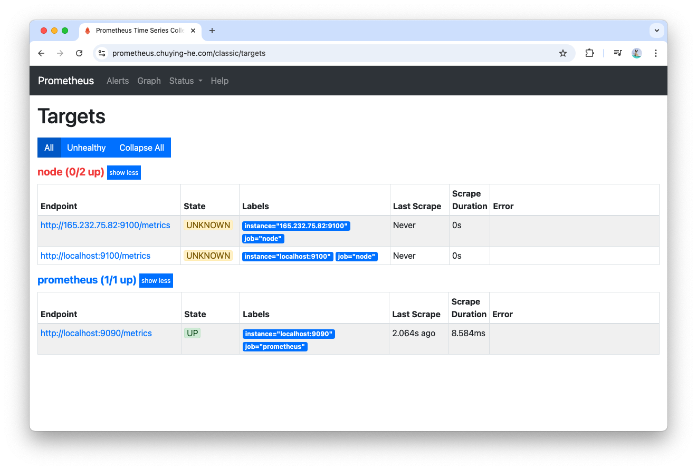

HandsOn
Hands-on: Prometheus on Ubuntu¶
0. schedule virtual server¶
- Udemy Course
- Tutorial
- Prometheus Git repo
- Cloud Server Platform: DigitialOcean
- Machine: Ubuntu 24 LTS, 1GB RAM, 25GB SSD, Frankkurt
- access with its public IP, root and pw
1. install Prometheus¶
with Linux apt install 2 stuffs:
- prometheus process (on port 9090)
- node exporter process (on port 9100)
- a user called
prometheus
sudo apt update
sudo apt install prometheus
# checking status
sudo service prometheus status
sudo service prometheus-node-exporter status
ps -u prometheus # checking user named "prometheus"
Info
you can visit:
- prometheus UI (in browser)
<Server1_PublicIP>:9090 - prometheus node exporter (in browser)
<Server1_PublicIP>:9100
Warning
❓ prometheus will be reading data from both metrics??
<Server1_PublicIP>:9090/metrics<Server1_PublicIP>:9100/metrics
2. configure domain¶
add DNS record to my Domain:
- type: A
- name: prometheus
- point to:
- ttl: default
the UI is then available at http://prometheus.<Domain>:9090/classic/graph
3. add reverse proxy¶
to be able to get rid of the port. In ubuntu server, do
sudo apt install nginx
sudo service nginx status
# setup
cd /etc/nginx/sites-enabled/
ls
the file default indicates the nginx default configuration -> the <Server1_PublicIP> now points to a "welcome to nginx" page
# use text editor "vi" to create and modify file `prometheus`
sudo vi prometheus
this configuration means, now when I vist prometheus.<Domain> it will auto-forward to prometheus.<Domain>:9090
server {
listen 80;
listen [::]:80;
server_name prometheus.<Domain>;
location / {
proxy_pass http://localhost:9090/;
}
}
# test nginx
nginx -t
# restart nginx
sudo service nginx restart
sudo service nginx status
as result, we can visit prometheus UI with
prometheus.<Domain>
4. add SSL¶
request free certificate for prometheus.<Domain>
sudo snap install --classic certbot
sudo certbot --nginx
as result,
https://prometheus.<Domain>will workcertificate is also added to
/etc/nginx/sites-enabled/prometheus
5. add basic authentication¶
cd /etc/nginx
# install apachae2-utils
sudo apt install apache2-utils
# create pw
htpasswd -c /etc/nginx/.htpasswd admin
# inspect
cat .htpasswd
# add nginx config
sudo vi /etc/nginx/sites-enabled/prometheus
example:
server {
...
#additional authentication properties
auth_basic "Protected Area";
auth_basic_user_file /etc/nginx/.htpasswd;
location / {
proxy_pass http://localhost:9090/;
}
...
}
nginx -t
sudo service nginx restart
sudo service nginx status
Note
Since port 9090 and 9100 are still open, we should block them for external connections.
iptables -A INPUT -p tcp -s localhost --dport 9090 -j ACCEPT
iptables -A INPUT -p tcp --dport 9090 -j DROP
iptables -A INPUT -p tcp -s localhost --dport 9100 -j ACCEPT
iptables -A INPUT -p tcp --dport 9100 -j DROP
iptables -L
iptables settings will be lost in case of system reboot. You will need to reapply them manually,
sudo apt install iptables-persistent
iptables-save > /etc/iptables/rules.v4
# you can see the rules are saved here
cat /etc/iptables/rules.v4
6. targets¶
when do curl http://localhost:9090/metrics on the Prometheus server cli, you can see a list of metrics

you can access the same metrics in the UI:
Status > Targets
Prometheus is aware of the 2 targets because they are automatically configured during the apt installation (in file /etc/prometheus/prometheus.yml).
prometheus.yml¶
/etc/prometheus/prometheus.yml is the Prometheus config file, you can also find it on the UI > Status > Configuration:
global:
scrape_interval: 15s
evaluation_interval: 15s
external_labels:
monitor: 'example'
# Alertmanager configuration
alerting:
alertmanagers:
- static_configs:
- targets: ['localhost:9093']
# Load rules once and periodically evaluate them according to the global 'evaluation_interval'.
rule_files:
# - "first_rules.yml"
# - "second_rules.yml"
scrape_configs:
# The job name is added as a label `job=<job_name>` to any timeseries scraped from this config.
- job_name: 'prometheus'
scrape_interval: 5s
scrape_timeout: 5s
static_configs:
- targets: ['localhost:9090']
- job_name: node
static_configs:
- targets: ['localhost:9100']
Warning
you can modify the config file and restart the Prometheus:
sudo service prometheus restart
Info
- Node Exporter Metrics shows computer performance, such as CPU disk IO network, IO memory
- Prometheus Metrics tells the time series database(
prometheus_tsdb_xxx) plus a few other Prometheus server metrics
7. install node-exporter on second server¶

on another server, I call this machine openshift, install node-exporter:
# In server openshift:
sudo apt install prometheus-node-exporter
sudo service prometheus-node-exporter status
you can visit the metrics by <Server2_PublicIP>:9100/metrics
# In server prometheus:
sudo vi /etc/prometheus/prometheus.yml
add:
- job_name: node
static_configs:
- targets: ['localhost:9100']
- targets: ['<Server2_PublicIP>:9100'] # add this
restart prometheus:
# check grammar
promtool check config /etc/prometheus/prometheus.yml
# restart
sudo service prometheus restart
sudo service prometheus status

8. deleting a time serie¶
to delete data from the Prometheus TSDB database.
# enable admin API
sudo vi /etc/default/prometheus
add:
ARGS="--web.enable-admin-api"
sudo service prometheus restart
sudo service prometheus status
delete a time serie in prometheus server CLI:
curl -X POST -g 'http://localhost:9090/api/v1/admin/tsdb/delete_series?match[]={instance="sbcode.net:9100"}'
9. query¶
here are some example of queries:
scrape_duration_seconds{job="node"}
# use regex
node_cpu_seconds_total{mode=~".*irq"}
RE2 is used
data types¶
- Scalar: A numeric floating point value. such as:
-1,12.34and 12345678.9 - Instant vector: A set of time series containing a single sample for each time series, all sharing the same timestamp
scrape_duration_seconds{instance="localhost:9100"} - Range Vector: A set of time series containing a range of data points over time for each time series. Examples:
scrape_duration_seconds{instance="localhost:9100"}[1m]scrape_duration_seconds{instance="localhost:9100"}[1m:15s]
functions¶
rate(scrape_duration_seconds{instance="localhost:9100"}[1m:20s])-> this is a Instant vector again
Info
the same Query you can use it in Grafana to get the same graph
10. recording rule¶
Rule or Recording Rule is a custom expression which can appear in the UI like all other metrics (such as scrape_duration_seconds)
operator¶
+(addition)-(subtraction)*(multiplication)/(division)%(modulo)^(power/exponentiation)
in folder /etc/prometheus create a new file and write the rule there:
sudo vi prometheus_rules.yml
add rule:
groups:
- name: custom_rules
rules:
- record: node_memory_MemFree_percent # <-- this is the Metric Name appears in the dropdown
expr: 100 - (100 * node_memory_MemFree_bytes / node_memory_MemTotal_bytes)
check grammar:
promtool check rules /etc/prometheus/prometheus_rules.yml
add rule file in the configuration file prometheus.yml:
rule_files:
- "prometheus_rules.yml"
now restart prometheus:
promtool check config /etc/prometheus/prometheus.yml
sudo service prometheus restart
sudo service prometheus status
Warning
everytime you add new rule or new rule file, do:
- promtool check rules xxx.yml
- promtool check config xxx.yml
- sudo service prometheus restart
the custom rules can be found under Status > Rules
11. alerting rule¶
alerting rule, similar to recording rule but extended. Create a new group in the prometheus_rules.yml:
- name: alert_rules
rules:
- alert: InstanceDown
expr: up == 0 # a.k.a "up==false"
for: 1m # how long it stays in "Pending"
labels:
severity: critical # self-defined
annotations:
summary: 'Instance {{ $labels.instance }} down'
description: '{{ $labels.instance }} of job {{ $labels.job }} has been down for more than 1 minute.'
Info
the expression expr in the alerting rule should be evaluated as false or true!
now restart prometheus:
promtool check config /etc/prometheus/prometheus.yml
sudo service prometheus restart
sudo service prometheus status
test¶
on the second server (I called the machine openshift), i temporarily stopped the node exporter:
sudo service prometheus-node-exporter stop
sudo service prometheus-node-exporter status
after some seconds, refresh the Alerts page and you will see:
12. alert manager¶
the Alerts page doesnt refresh itself automatically, which is not very convenient, I'd like to receive alerts per Slack or Telegram - I need another service AlertManager.

It handles Grouping, Silences, Client Behavior and High Availability.
sudo apt install prometheus-alertmanager
sudo service prometheus-alertmanager status
# service "alert manager" is also managed by user "prometheus"
ps -u prometheus
Info
the insatllation of AlertManager automatically creates files under directory /etc/prometheus/:
alertmanager.yml
alertmanager_templates/
Info
you can also visit th AlertManager under <Server1_PublicIP>:9093 - but we dont want that
we block external traffic:
iptables -A INPUT -p tcp -s localhost --dport 9093 -j ACCEPT
iptables -A INPUT -p tcp --dport 9093 -j DROP
iptables -L
iptables-save > /etc/iptables/rules.v4
cat /etc/iptables/rules.v4
# double check it internal traffic still works
curl localhost:9093
add another scraping target in prometheus.yml - so that AlertManager's endpoint /metrics is scraped by Prometheus as well!
scrape_configs:
...
- job_name: alertmanager
static_configs:
- targets: ['localhost:9093']
promtool check config /etc/prometheus/prometheus.yml
sudo service prometheus restart
sudo service prometheus status
13. setup mail service¶
# make a backup
cp alertmanager.yml alertmanager_orig.yml
sudo vi alertmanager.yml
# alertmanager.yml
route:
receiver: smtp
receivers:
- name: smtp
email_configs:
- smarthost: mail.your-email-service-domain:port
hello: your-email-service-domain
to: 'to@example.com'
from: 'from@example.com'
auth_username: 'from@example.com'
auth_password: 'your-password'
send_resolved: true
require_tls: false
route
Alertmanager 的 Route（路由） 是告警分发的核心枢纽，它决定了收到的告警应该发送给谁、如何分组、何时发送。
# grammar check
amtool check-config alertmanager.yml
# restart alert manager
sudo service prometheus-alertmanager restart
sudo service prometheus-alertmanager status
# debug config if necessary
amtool config
journalctl -u prometheus-alertmanager.service -f
# customize external URL to
sudo vi /etc/default/prometheus
change /etc/default/prometheus file:
ARGS="--web.external-url=<Domain>"
If you have existing settings in the ARGS parameter, then separate them using a space. E.g.:
ARGS="--web.enable-admin-api --web.external-url=https://example.com"
promtool check config /etc/prometheus/prometheus.yml
sudo service prometheus restart
sudo service prometheus status
Changing the Email Template
You may want to change the email template used by the alert manager. You can modify /usr/share/prometheus/alertmanager/default.tmpl -> The grammar is HTML-like.
Note
more configurations refer to alertmanager configuration
14. grafana¶
install grafana and connect it to prometheus. On a third ubuntu server(Server3), do:
install¶
# install dependencies
sudo apt update
sudo apt-get install -y adduser libfontconfig1
# download grafana binary
wget https://dl.grafana.com/oss/release/grafana_9.3.2_amd64.deb
sudo dpkg -i grafana_9.3.2_amd64.deb
# start grafana
sudo service grafana-server start
sudo service grafana-server status
its accessible on http://<Server3_PublicIP>:3000, the default credential is:
- Username :
admin - Password :
admin
take prometheus as data source¶
grafana needs to know prometheus as a data source.
prometheus endpoint setup
- URL:
<Domain> - Access:
Server(default) - Basic auth:
On - User:
admin - Password:
<Password> - HTTP Method:
POST
Grafana is nothing more than a more user-friendly visualisation
dashboard¶
you can import prometheus-provided-dashboard:
import community-provided-dashboard:
- Configuration > Data Sources > Plugins > Find more plugins on Grafana.com > Dashboards
- Filter
Data source: Prometheus - Find the dashboard "Node Exporter for Prometheus Dashboard EN"
- Copy the Dashboard ID
- Dashboards > Manage > Import > paste the Dashboard ID, select "Prometheus" as data source
- Import
15. thanos¶
to deduplicate, store and receive metrics, evaluate rules
16. loki¶
to receive, store and analyse logs